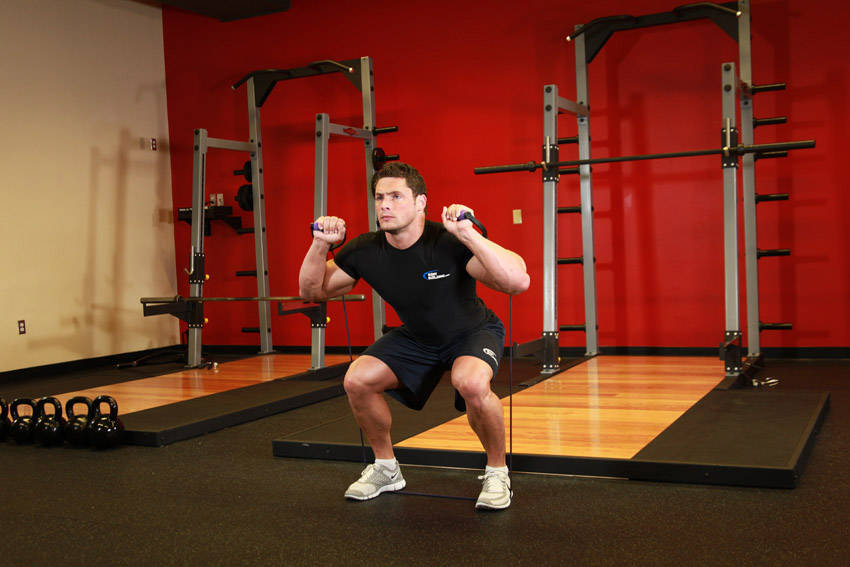

- To start out, make sure that the exercise band is at an even split between both the left and right side of the body. To do this, use your hands to grab both sides of the band and place both feet in the middle of the band. Your feet should be shoulder width apart from each other.
- When holding the bands, they should be the same height on each side. You should be using a pronated grip (palms facing forward) and have the handles of the bands next to your face for this exercise. This is the starting position.
- Slowly start to bend the knees and lower the legs so that your thighs are parallel to the floor while exhaling.
- Use the heel of your feet to push your body up to the starting position as you exhale.
- Repeat for the recommended amount of repetitions.
This exercise appears in Programmd training programs. Take the quiz to find one for your gym.
Find your program